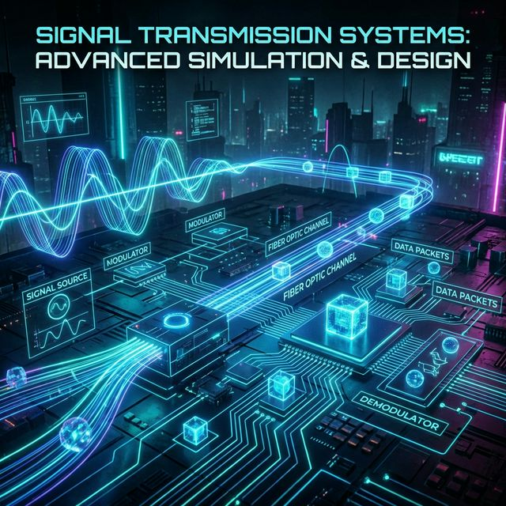
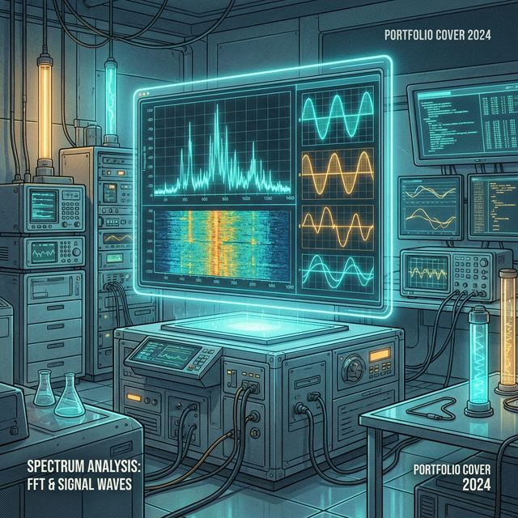
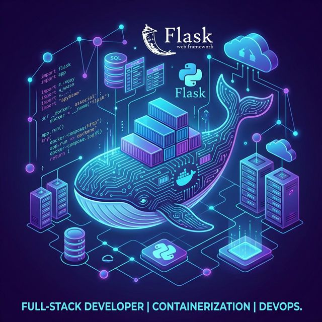

Mes Compétences
Issu du programme national BUT R&T, voici les 5 piliers de ma formation. Cliquez sur une compétence pour filtrer les projets associés.
Administrer
Gérer les réseaux et l'Internet. Configuration d'équipements, gestion des utilisateurs et services.
Filtrer par cette compétence →Connecter
Connecter les entreprises et les usagers. Solutions de télécoms et transmission de données.
Filtrer par cette compétence →Programmer
Créer des outils et applications informatiques pour les R&T. Automatisation et scripts.
Filtrer par cette compétence →Sécuriser
Parcours Cyber : Protéger les infrastructures et les données contre les menaces.
Filtrer par cette compétence →Surveiller
Mesurer et analyser les performances. Supervision d'infrastructure en temps réel.
Filtrer par cette compétence →Détails des Projets
Se sensibiliser à l'hygiène informatique et à la cybersécurité
En tant que RSSI, réalisation d'un diaporama de sensibilisation aux risques numériques. Focus sur 4 bonnes pratiques pour réduire les cyberattaques dues à la négligence humaine.
Livrables & Formations
- • Diaporama de présentation (~5 diapositives)
- • Certification MOOC ANSSI
- • Certification Cisco Netacad
Analyse des risques et création d'un support de sensibilisation RSSI.
Réduire les risques cyber liés au facteur humain en entreprise.
Recherche documentaire (ANSSI) et synthèse vulgarisée.
Adapter le discours technique à un public non-initié.
Structure d'une politique de sécurité et bases de l'hygiène informatique.
Inclure plus d'exemples concrets de cas réels pour plus d'impact.
S'initier aux réseaux informatiques
Conception, simulation et mise en œuvre d'une infrastructure réseau complète intégrant des services (Web, DNS, DHCP) et une gestion rigoureuse via Gantt.
Livrables & Étapes
- • Diagramme de Gantt (Gestion de projet)
- • Schéma Packet Tracer & Simulation
- • Maquette VM & Services (Web, DNS, DHCP)
Planification via Gantt et déploiement d'une infrastructure réseau simulée puis réelle sur VM.
Pour comprendre les fondamentaux du routage, de la commutation et des services essentiels.
Outils : Packet Tracer pour la simulation, Draw.io pour les schémas, et VMware pour les machines Linux.
La configuration des acl pour avoir acces a internet.
Maîtrise de la pile TCP/IP et importance de la planification amont pour le succès d'un projet.
Automatiser le déploiement des services avec des scripts Shell pour gagner en efficacité.

Découvrir un dispositif de transmission
Découverte et utilisation de Matlab Simulink pour modéliser et simuler des systèmes de transmission. Travail en binôme axé sur la rigueur technique et la gestion autonome du temps.
Livrables & Objectifs
- • Modélisation Simulink
- • Simulation de systèmes
- • Compte-rendu technique
Réalisation d'une modélisation et simulation de systèmes de transmission sur Simulink.
Pour comprendre les principes fondamentaux de la modulation et de la transmission de signaux.
Utilisation des outils de base de Simulink et documentation pédagogique Moodle.
La modification de certains systèmes complexes et l'interprétation des résultats.
Capacité à simuler des systèmes et aptitude à synthétiser des informations techniques.
Anticiper les difficultés en amont et approfondir la maîtrise de Simulink avant le projet.
Se présenter sur Internet
Réalisation d'un site web responsive conforme aux standards W3C. Conception d'une interface adaptée aux mobiles, tablettes et ordinateurs.
Objectifs & Pages
- • Pages Presentation, CV, Compétences, Hobby
- • Design Responsive (3 typologies d'affichage)
- • Conformité W3C & Accessibilité
Conception et réalisation intégrale du portfolio personnel responsive.
Pour mettre en avant mes compétences R&T et centraliser mes projets SAE.
Utilisation de HTML5/CSS3, JavaScript natif, et validation W3C.
La gestion fine du responsive sur les tableaux et la structure des compétences.
Maîtrise du positionnement avancé en CSS et de l'accessibilité web.
L'utilisation d'un préprocesseur type Sass pour mieux organiser le CSS.
Traiter des données
Extraction et transformation de données publiques (CSV/JSON). Développement de scripts Python automatiques et d'une interface web dynamique pour la visualisation de graphiques.
Livrables & Étapes
- • Scripts de transformation Python
- • Dashboard Web (PHP/JSON)
- • Collaboration GitLab
Manipulation de données publiques et création de visualisations graphiques interactives.
Automatiser la conversion de fichiers et faciliter leur intégration dans des applications web.
Scripts automatiques en Python et affichage dynamique via un script PHP.
La gestion de gros volumes de données et la coordination de l'équipe via GitLab.
Maîtrise de la manipulation de fichiers et importance du suivi de version en équipe.
Explorer d'autres bibliothèques graphiques comme D3.js pour plus de flexibilité.
Construire un réseau pour une petite structure
Conception et déploiement d'une infrastructure réseau complète. Configuration d'équipements Cisco (VLAN, ACL, NAT) et gestion des services IP (DHCP, DNS, Téléphonie).
Livrables & Étapes
- • Schéma d'adressage IP
- • Maquette GNS3 & Configuration CLI
- • Analyse de trafic Wireshark
Design et administration d'un réseau multi-VLAN avec routage et accès internet sécurisé.
Garantir que tous les services partagés (téléphonie, web, LDAP) sont accessibles de manière isolée.
Matériel Cisco réel et simulation GNS3 pour valider les configurations avant déploiement.
La résolution de boucles Spanning Tree et la rédaction d'ACL complexes pour la DMZ.
Importance d'un plan d'adressage évolutif et maîtrise avancée de la ligne de commande Cisco.
Mettre en place une pipeline CI/CD Ansible pour tester les configs sur GNS3 automatiquement.

Outils pour l'analytique spectrale
Analyse de signaux et étude fréquentielle via la transformée de Fourier (FFT). Mise en oeuvre de filtres numériques et caractérisation de dispositifs de transmission.
Livrables & Objectifs
- • Analyse spectrale (FFT)
- • Design de filtres numériques
- • Soutenance orale avec diaporama
Exploration et compréhension des méthodes d'analyse spectrale (balayage, FFT).
Caractériser un signal ou un système pour en extraire des paramètres essentiels (fréquence, bande passante).
Utilisation d'analyseurs de spectre en laboratoire et manipulation de filtres numériques.
La compréhension fine de la différence entre l'analyse à balayage et la FFT.
Maîtrise des outils de mesure et capacité à présenter des résultats complexes de façon claire.
Utiliser des outils de simulation plus avancés pour visualiser le filtrage en temps réel avant la pratique.

Solution informatique pour l'entreprise
Mise en place d'une application web dynamique avec Flask and Docker. Gestion d'une base de données PostgreSQL and déploiement d'une architecture conteneurisée.
Livrables & Étapes
- • App Flask (Python/Jinja2)
- • Base PostgreSQL/SQLAlchemy
- • Orchestration Docker Compose
Développement d'une application web dynamique intégrant une gestion de base de données persistante.
Centraliser et sauvegarder des données métiers de manière sécurisée et accessible via un navigateur.
Framework Flask pour le back-end et Docker pour garantir un environnement de déploiement stable.
La configuration de Docker pour la communication entre le conteneur App et la DB.
Maîtrise du cycle de vie d'une application conteneurisée et modélisation de données complexes.
Mettre en place un front-end plus moderne avec un framework JS et utiliser un serveur de production type Gunicorn.
Déploiement de Services & Automatisation
Projet complexe fusionnant réseaux, systèmes et développement. Conteneurisation, VoIP, traitement d'image et IoT.
Objectifs & Moyens
- • Stack Docker (TFTP, MariaDB, Nginx)
- • VoIP (FreePBX) & Module OpenCV
- • Capteurs LoRa & Dashboard Web
Déploiement de services applicatifs et automatisation de supervision.
Prouver ma polyvalence technique en conditions proches de l'entreprise.
Usage de GitLab CI, Docker Compose, et scripts Python/LoRa.
Synchronisation TLS and détection fiable des badges via OpenCV.
Intégration complexe de systèmes hétérogènes and "security by design".
Utiliser TimeSeriesDB pour la télémétrie IoT.